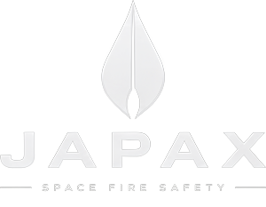

JaPax
Galactic Problem Solver · NASA Space Apps Challenge 2026
Simulador 3D que convierte 30 años de experimentos de combustión de la NASA en respuestas sobre qué arde primero en una base lunar. Tocas un componente, prendes fuego y ves cómo se propaga entre piezas de un traje, de la ISS o de un módulo lunar. Cada dato cita su fuente (PSI ID y DOI) y se marca como medido, predicho o estimado.
Mi papel: desarrollador principal, junto a Pablo.
 Next.js
Next.js TypeScript
TypeScript Tailwind
Tailwind- WebGL
 Claude API
Claude API Vercel
Vercel